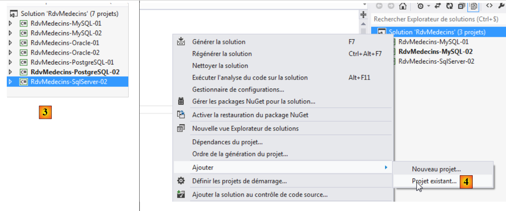

7. Caso práctico con Firebird 2.1
7.1. Instalación de las herramientas
Las herramientas que hay que instalar son las siguientes:
- SGBD: [http://www.firebirdsql.org/en/firebird-2-1-5/];
- una herramienta de administración: EMS SQL Manager for InterBase/Firebird Freeware [http://www.sqlmanager.net/fr/products/ibfb/manager/download].
En los siguientes ejemplos, el usuario es sysdba con la contraseña masterkey.
Iniciamos Firebird y, a continuación, la herramienta [SQL Manager Lite for Firebird], con la que administraremos SGBD.
 |
- En [1], iniciamos el SGBD Firebird desde el menú Inicio. Aquí, el SGBD no se ha instalado como un servicio de Windows;
- en [2], el servicio se ha iniciado. Se ha instalado un icono en la parte inferior derecha de la pantalla. Con un clic derecho sobre él, se puede detener el SGBD.
Ahora iniciamos la herramienta [SQL Manager Lite for Firebird] con la que vamos a administrar SGBD y [3].
 |
- En [4], creamos una nueva base;
- en [5], aceptamos;
 |
- en [5], nos conectamos como SYSDBA / masterkey;
- en [6], se indica la ubicación del archivo que se va a crear. De hecho, la base de datos se creará en un único archivo;
- en [7], se valida la orden SQL que se va a ejecutar;
 |
- en [8], se ha creado la base de datos. Ahora debe guardarse en [EMS Manager]. La información es correcta. Se ejecuta [OK];
- en [9], nos conectamos a ella;
- En [10], [EMS Manager] muestra la base de datos, que por ahora está vacía.
Ahora vamos a conectar un proyecto VS 2012 a esta base.
7.2. Creación de la base a partir de las entidades
Empezamos duplicando la carpeta del proyecto [RdvMedecins-SqlServer-01] en [RdvMedecins-Firebird-01] [1]:
 |
- en [2], en VS 2012, eliminamos el proyecto [RdvMedecins-SqlServer-01] de la solución;
 |
- en [3], el proyecto se ha eliminado;
- en [4], añadimos otro. Este se encuentra en la carpeta [RdvMedecins-Firebird-01] que hemos creado anteriormente;
 |
- en [5], el proyecto cargado se llama [RdvMedecins-SqlServer-01];
- en [6], cambiamos su nombre a [RdvMedecins-Firebird-01]
 |
- en [7], añadimos otro proyecto a la solución. Este se encuentra en la carpeta [RdvMedecins-SqlServer-01] del proyecto que hemos eliminado de la solución anteriormente;
- en [8], el proyecto [RdvMedecins-SqlServer-01] se ha reintegrado a la solución.
El proyecto [RdvMedecins-Firebird-01] es idéntico al proyecto [RdvMedecins-SqlServer-01]. Tenemos que realizar algunas modificaciones. En [App.config], vamos a modificar la cadena de conexión y el [DbProviderFactory], que debemos adaptar a cada SGBD.
<!-- cadena de conexión en la base -->
<connectionStrings>
<add name="monContexte" connectionString="User=SYSDBA;Password=masterkey;Database=D:\data\istia-1213\c#\dvp\Entity Framework\databases\firebird\RDVMEDECINS-EF.GDB;DataSource=localhost;
Port=3050;Dialect=3;Charset=NONE;Role=;Connection lifetime=15;Pooling=true;MinPoolSize=0;MaxPoolSize=50;Packet Size=8192;ServerType=0;" providerName="FirebirdSql.Data.FirebirdClient" />
</connectionStrings>
<!-- el proveedor de la fábrica -->
<system.data>
<DbProviderFactories>
<add name="Firebird Client Data Provider" invariant="FirebirdSql.Data.FirebirdClient" description=".Net Framework Data Provider for Firebird" type="FirebirdSql.Data.FirebirdClient.FirebirdClientFactory, FirebirdSql.Data.FirebirdClient, Version=2.7.7.0, Culture=neutral, PublicKeyToken=3750abcc3150b00c" />
</DbProviderFactories>
</system.data>
- línea 3: el usuario y su contraseña, así como la ruta completa de la base de datos Firebird;
- líneas 8-10: el DbProviderFactory. La línea 9 hace referencia a un DLL [FirebirdSql.Data.FirebirdClient] que no tenemos. Lo obtenemos con NuGet [1]:
 |
- en [2], en el campo de búsqueda se escribe la palabra clave firebird;
- en [3], se elige el paquete [Firebird ADO.NET Data Provider]. Es un conector ADO.NET para Firebird;
 |
- en [4], la nueva referencia;
- en [5], en [App.config], hay que poner el version correcto del DLL. Se encuentra en sus propiedades.
En el archivo [Entites.cs], hay que adaptar el esquema de las tablas que se van a generar:
[Table("MEDECINS")]
public class Medecin : Personne
{...}
[Table("CLIENTS")]
public class Client : Personne
{...}
[Table("CRENEAUX")]
public class Creneau
{...}
[Table("RVS")]
public class Rv
{...}
Aquí, las tablas no tienen esquema.
Configuramos la ejecución del proyecto:
 |
- en [1], le damos otro nombre al ensamblado que se va a generar;
- en [2], así como otro espacio de nombres por defecto;
- en [3], se designa el programa que se va a ejecutar.
En este punto, no hay errores de compilación. Ejecutemos el programa [CreateDB_01]. Se produce la siguiente excepción:
Recordamos haber tenido el mismo error con MySQL, Oracle y PostgreSQL. Está relacionado con el tipo del campo Timestamp de las entidades. Realizamos la misma modificación que con los dos SGBD anteriores. En las entidades, sustituimos las tres líneas
[Column("TIMESTAMP")]
[Timestamp]
public byte[] Timestamp { get; set; }
por las siguientes:
[ConcurrencyCheck]
[Column("VERSIONING")]
public int? Versioning { get; set; }
Por lo tanto, cambiamos el tipo de la columna, que pasa de byte[] a int?. En SGBD, utilizaremos procedimientos almacenados para incrementar este entero en una unidad cada vez que se inserte o modifique una fila.
Realizamos la modificación anterior para las cuatro entidades y, a continuación, volvemos a ejecutar la aplicación. Entonces obtenemos el siguiente error:
La línea 1 indica que la base de datos está en uso. Me parece que no era así y no he conseguido resolver este problema.
No importa. Vamos a crear la base de datos [RDVMEDECINS-EF] manualmente con la herramienta [EMS Manager for Firebird]. No describiremos todos los pasos, sino solo los más importantes.
La base de datos Firebird será la siguiente:
Las tablas
 |
- en [1], ID es una clave primaria con el atributo Autoincrement. Se generará automáticamente mediante SGBD;
 |
 |
 |
Las diferentes tablas tienen las claves primarias y externas que tenían estas mismas tablas en los ejemplos anteriores. Las claves externas tienen el atributo ON DELETE CASCADE.
Los generadores
Al igual que con Oracle y PostgreSQL, hemos creado generadores de números consecutivos. Hay 5: [1].
 |
- [CLIENTS_ID_GEN] se utilizará para generar la clave primaria de la tabla [CLIENTS];
- [MEDECINS_ID_GEN] se utilizará para generar la clave primaria de la tabla [MEDECINS];
- [CRENEAUX_ID_GEN] se utilizará para generar la clave primaria de la tabla [CRENEAUX];
- [RVS_ID_GEN] se utilizará para generar la clave primaria de la tabla [RVS];
- [VERSIONS_GEN] se utilizará para generar los valores de las columnas [VERSIONING] de todas las tablas.
Los disparadores
Un disparador es un procedimiento ejecutado por SGBD antes o después de un evento (Inserción, Modificación, Eliminación) en una tabla. Tenemos 8: [1]:
 |
Veamos el código DDL del disparador [BI_CLIENTS_ID] que alimenta la columna [ID] de la tabla [CLIENTS]:
- línea 2: antes de cada inserción en la tabla [CLIENTS];
- líneas 6-7: si la columna ID es NULL, entonces se le asigna el siguiente valor del generador de números [CLIENTS_ID_GEN].
Los triggers [ BI_CLIENTS_ID, BI_MEDECINS_ID, BI_CRENEAUX_ID, BI_RVS_ID] están todos construidos de la misma manera.
Veamos ahora el código DDL del disparador [CLIENTS_VERSION_TRIGGER] que alimenta la columna [VERSIONING] de la tabla [CLIENTS]:
- líneas 1-3: antes de cada operación INSERT o UPDATE en la tabla [CLIENTS];
- línea 6: la columna ["VERSIONING"] recibe el siguiente valor del generador de números [VERSIONS_GEN]. Este generador alimenta las columnas ["VERSIONING"] de las cuatro tablas.
Los disparadores [MEDECINS_VERSION_TRIGGER, CRENEAUX_VERSION_TRIGGER, RVS_VERSION_TRIGGER] son análogos.
El script de generación de las tablas de la base de datos Firebird [RDVMEDECINS-EF] se ha colocado en la carpeta [RdvMedecins / databases / Firebird]. El lector podrá cargarlo y ejecutarlo para crear sus tablas.
Una vez hecho esto, se pueden ejecutar los diferentes programas del proyecto. Dan los mismos resultados que con SQL Server, salvo el programa [ModifyDetachedEntities], que se cuelga por la misma razón por la que se colgaba con Oracle y MySQL. El problema se resuelve de la misma manera. Basta con copiar el programa [ModifyDetachedEntities] del proyecto [RdvMedecins-Oracle-01] al proyecto [RdvMedecins-Firebird-01].
7.3. Arquitectura multicapa basada en EF 5
Volvemos a nuestro caso práctico descrito en el apartado 2.
 |
Comenzaremos por construir la capa [DAO] de acceso a los datos. Para ello, duplicamos el proyecto de consola VS 2012 [RdvMedecins-SqlServer-02] en [RdvMedecins-Firebird-02] [1]:
 |
- en [2], eliminamos el proyecto [RdvMedecins-SqlServer-02];
 |
- en [3], se añade un proyecto existente a la solución. Se toma de la carpeta [RdvMedecins-Firebird-02] que se acaba de crear;
- en [4], el nuevo proyecto lleva el nombre del que se ha eliminado. Vamos a cambiarle el nombre;
 |
- en [5], hemos cambiado el nombre del proyecto;
- en [6], modificamos algunas de sus propiedades, como en este caso el nombre del ensamblado;
- en [7], se elimina la carpeta [Models] para sustituirla por la carpeta [Models] del proyecto [RdvMedecins-Firebird-01]. De hecho, ambos proyectos comparten las mismas plantillas.
 |
- en [8], las referencias actuales del proyecto;
- en [9], se ha añadido el conector ADO.NET de Firebird con la herramienta NuGet.
En el archivo [App.config], se sustituye la información de la base SQL Server por la de la base Firebird. Se encuentra en el archivo [App.config] del proyecto [RdvMedecins-Firebird-01]:
<!-- cadena de conexión en la base -->
<connectionStrings>
<add name="monContexte" connectionString="User=SYSDBA;Password=masterkey;Database=D:\data\istia-1213\c#\dvp\Entity Framework\databases\firebird\RDVMEDECINS-EF.GDB;DataSource=localhost;
Port=3050;Dialect=3;Charset=NONE;Role=;Connection lifetime=15;Pooling=true;MinPoolSize=0;MaxPoolSize=50;Packet Size=8192;ServerType=0;" providerName="FirebirdSql.Data.FirebirdClient" />
</connectionStrings>
<!-- el proveedor de la fábrica -->
<system.data>
<DbProviderFactories>
<add name="Firebird Client Data Provider" invariant="FirebirdSql.Data.FirebirdClient" description=".Net Framework Data Provider for Firebird" type="FirebirdSql.Data.FirebirdClient.FirebirdClientFactory, FirebirdSql.Data.FirebirdClient, Version=2.7.7.0, Culture=neutral, PublicKeyToken=3750abcc3150b00c" />
</DbProviderFactories>
</system.data>
Los objetos gestionados por Spring también cambian. Actualmente tenemos:
<!-- configuración de muelles -->
<spring>
<context>
<resource uri="config://spring/objects" />
</context>
<objects xmlns="http://www.springframework.net">
<object id="rdvmedecinsDao" type="RdvMedecins.Dao.Dao,RdvMedecins-SqlServer-02" />
</objects>
</spring>
La línea 7 hace referencia al ensamblado del proyecto [RdvMedecins-SqlServer-02]. El ensamblado es ahora [RdvMedecins-Firebird-02].
Una vez hecho esto, estamos listos para ejecutar la prueba de la capa [DAO]. Antes hay que asegurarse de rellenar la base de datos (programa [Fill] del proyecto [RdvMedecins-Firebird-01]). La prueba se supera.
Creamos el DLL del proyecto tal y como se hizo para el proyecto [RdvMedecins-SqlServer-02] y reunimos elconjunto de DLL del proyecto en una carpeta [lib] creada en [RdvMedecins-Firebird-02]. Estas serán las referencias del proyecto web [RdvMedecins-Firebird-03] que vendrá a continuación.
 |
Ahora estamos listos para construir la capa [ASP.NET] de nuestra aplicación:
 |
Partiremos del proyecto [RdvMedecins-SqlServer-03]. Duplicamos la carpeta de este proyecto en [RdvMedecins-Firebird-03] [1]:
 |
- en [2], con VS 2012 Express para la web, abrimos la solución de la carpeta [RdvMedecins-Firebird-03];
- en [3], cambiamos tanto el nombre de la solución como el del proyecto;
 |
- en [4], las referencias actuales del proyecto;
- en [5], las eliminamos;
- en [6], para sustituirlas por referencias a DLL que acabamos de guardar en una carpeta [lib] del proyecto [RdvMedecins-Firebird-02].
Ahora solo nos queda modificar el archivo [Web.config]. Sustituimos su contenido actual por el contenido del archivo [App.config] del proyecto [RdvMedecins-Firebird-02]. Una vez hecho esto, ejecutamos el proyecto web. Funciona. No olvidemos rellenar la base de datos antes de ejecutar la aplicación web.